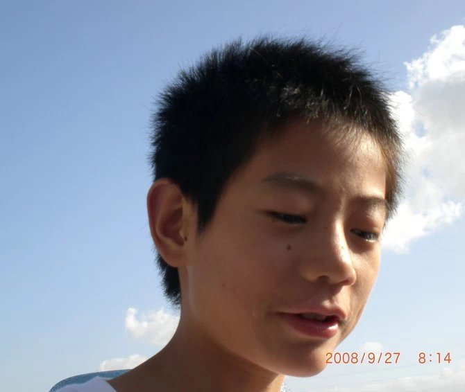

|  |
Guangxiang Zhao (赵光香） Researcher at Pujiang Lab since August 2022. Before joing here, I received Doctor of Science from Peking University, Google Scholar OpenReview Email: zhaoguangxiang at pku.edu.cn / guangxiangzhao at gmail.com |
Machine learning methods for natural language processing.